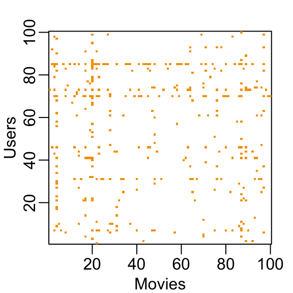
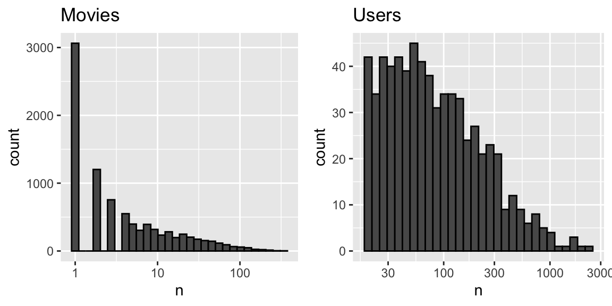
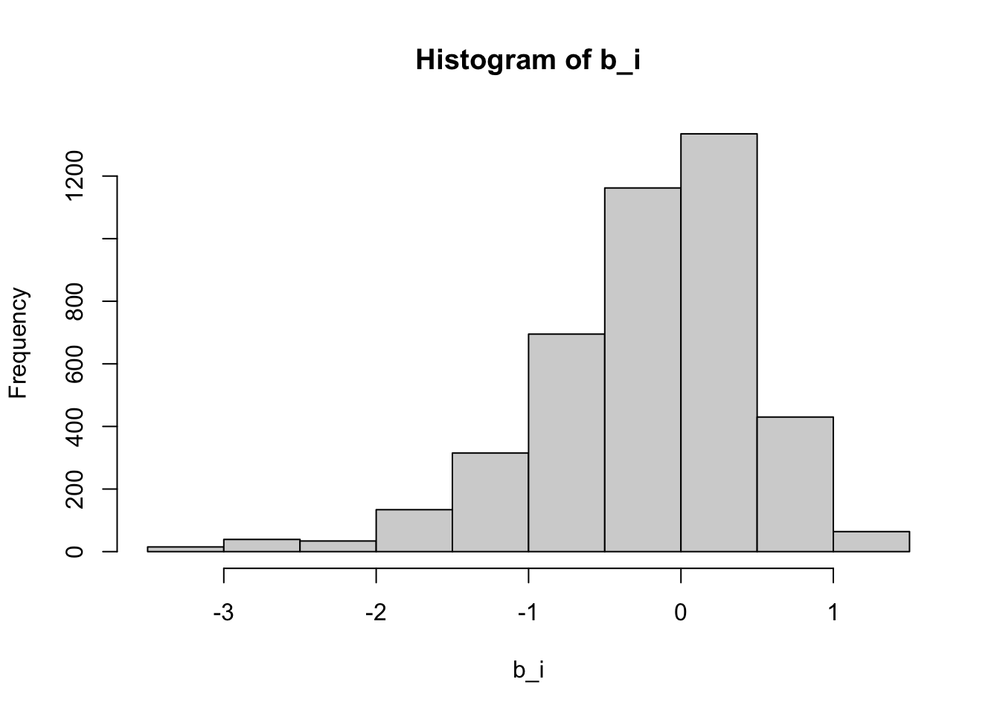
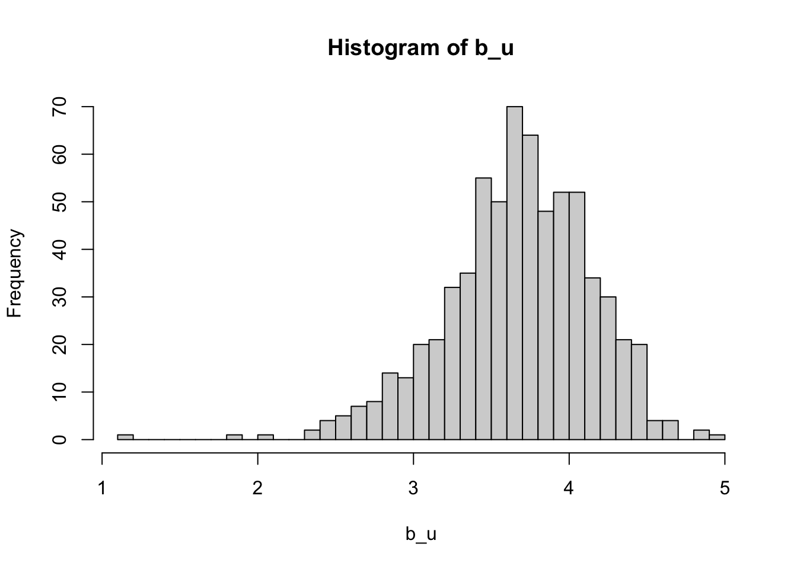
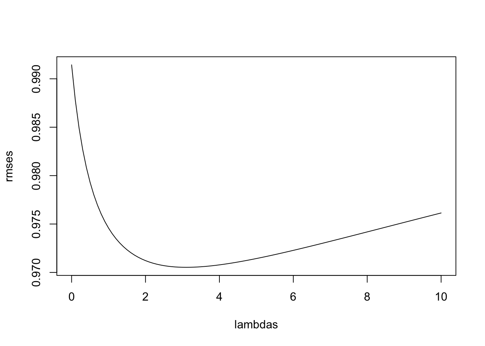
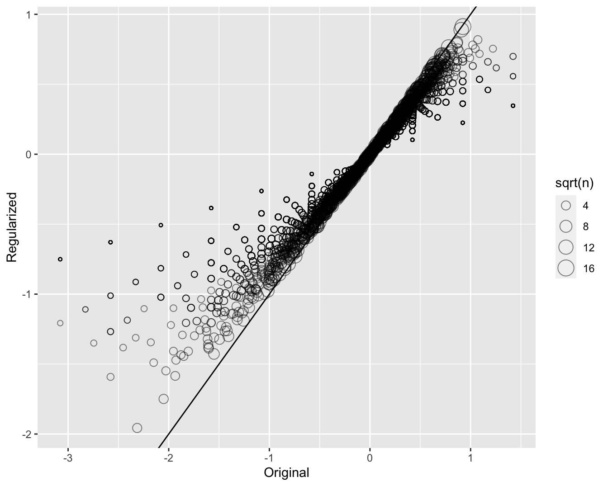
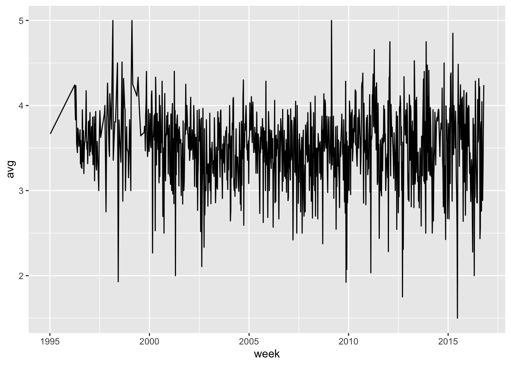

# A tibble: 5 × 7
movieId title year genres userId rating timestamp
<int> <chr> <int> <fct> <int> <dbl> <int>
1 31 Dangerous Minds 1995 Drama 1 2.5 1.26e9
2 1029 Dumbo 1941 Anima… 1 3 1.26e9
3 1061 Sleepers 1996 Thril… 1 3 1.26e9
4 1129 Escape from New York 1981 Actio… 1 2 1.26e9
5 1172 Cinema Paradiso (Nuovo cinema Pa… 1989 Drama 1 4 1.26e929 Regularization
29.1 Case study: recommendation systems
During its initial years of operation, Netflix used a 5-star recommendation system.
One star suggests it is not a good movie, whereas five stars suggests it is an excellent movie.
Here, we provide the basics of how these recommendations are made, motivated by some of the approaches taken by the winners of the Netflix challenges.
In October 2006, Netflix offered a challenge to the data science community: improve our recommendation algorithm by 10% and win a million dollars.
In September 2009, the winners were announced1.
You can read a summary of how the winning algorithm was put together here: http://blog.echen.me/2011/10/24/winning-the-netflix-prize-a-summary/
and a more detailed explanation here: https://www2.seas.gwu.edu/~simhaweb/champalg/cf/papers/KorenBellKor2009.pdf.
We will now show you some of the data analysis strategies used by the winning team.
29.1.1 Movielens data
The Netflix data is not publicly available, but the GroupLens research lab2 generated their own database with over 20 million ratings for over 27,000 movies by more than 138,000 users.
We make a small subset of this data available via the dslabs package:
Each row represents a rating given by one user to one movie.
We can see the number of unique users that provided ratings and how many unique movies were rated:
movielens |> summarize(n_distinct(userId), n_distinct(movieId)) n_distinct(userId) n_distinct(movieId)
1 671 9066Not every user rated every movie. So we can think of these data as a very large matrix, with users on the rows and movies on the columns, with many empty cells.
Here is the matrix for six users and four movies.
| userId | Pulp Fiction | Shawshank Redemption | Forrest Gump | Silence of the Lambs |
|---|---|---|---|---|
| 13 | 3.5 | 4.5 | 5.0 | NA |
| 15 | 5.0 | 2.0 | 1.0 | 5.0 |
| 16 | NA | 4.0 | NA | NA |
| 17 | 5.0 | 5.0 | 2.5 | 4.5 |
| 19 | 5.0 | 4.0 | 5.0 | 3.0 |
| 20 | 0.5 | 4.5 | 2.0 | 0.5 |
You can think of the task of a recommendation system as filling in the
NAs in the table above.To see how sparse the matrix is, here is the matrix for a random sample of 100 movies and 100 users with yellow indicating a user/movie combination for which we have a rating.

Let’s look at some of the general properties of the data to better understand the challenges.
Here is the distribution of number of ratins for each movie.

We need to build an algorithm with the collected data that will then be applied outside our control, as users look for movie recommendations.
So let’s create a test set to assess the accuracy of the models we implement.
We then split the data into a training set and test set by assigning 20% of the ratings made by each user to the test set:
set.seed(2006)
indexes <- split(1:nrow(movielens), movielens$userId)
test_ind <- sapply(indexes, function(i) sample(i, ceiling(length(i)*.2))) |>
unlist() |>
sort()
test_set <- movielens[test_ind,]
train_set <- movielens[-test_ind,]- To make sure we don’t include movies that are not in both test and train sets, we remove entries using the
semi_joinfunction:
test_set <- test_set |> semi_join(train_set, by = "movieId")
train_set <- train_set |> semi_join(test_set, by = "movieId")- We use
pivot_widerto make a matrix with users represented by rows and movies by the columns
y_train <- select(train_set, movieId, userId, rating) |>
pivot_wider(names_from = movieId, values_from = rating) |>
column_to_rownames("userId") |>
as.matrix()
y_test <- select(test_set, movieId, userId, rating) |>
pivot_wider(names_from = movieId, values_from = rating) |>
column_to_rownames("userId") |>
as.matrix()
y_test <- y_test[rownames(y_train), colnames(y_train)]- Finally, we create table to map movie ids to titles:
movie_map <- train_set |> select(movieId, title) |> distinct(movieId, .keep_all = TRUE)29.2 Loss function
- The Netflix challenge decided on a winner based on the root mean squared error (RMSE) computed on the test set. We define \(y_{u,i}\) as the rating for movie \(i\) by user \(u\) in the test set and denote the prediction, obtained from the training set, with \(\hat{y}_{u,i}\). We then define the residuals as:
\[ r_{u,i} = y_{u,i} - \hat{y}_{u,i} \]
- The metric used by the competion was defined as:
\[ \mbox{RMSE} = \sqrt{\frac{1}{N} \sum_{u,i}^{} r_{u,i}^2 } \]
with \(N\) being the number of user/movie combinations for which we made predictions and the sum occurring over all these combinations.
We can interpret the RMSE similarly to a standard deviation: it is the typical error we make when predicting a movie rating.
If this number is larger than 1, it means our typical error is larger than one star, which is not good.
We define a function to compute this quantity for any set of residuals:
rmse <- function(r) sqrt(mean(r^2, na.rm = TRUE))- In this chapter and the next we introduce two concepts, regularization and matrix factorization, that were used by the winners of the Netflix challenge to obtain lowest RMSE.
Note
We later provide a formal discussion of the mean squared error.
29.3 A first model
- First model
\[ Y_{u,i} = \mu + \varepsilon_{u,i} \]
with \(\varepsilon_{i,u}\) independent errors sampled from the same distribution centered at 0 and \(\mu\) the true rating for all movies.
- We know that the estimate that minimizes the RMSE is the least squares estimate of \(\mu\) and, in this case, is the average of all ratings:
mu <- mean(y_train, na.rm = TRUE)
mu[1] 3.578109- If we predict all unknown ratings with \(\hat{\mu}\) we obtain the following RMSE:
rmse(y_test - mu)[1] 1.050776- Keep in mind that if you plug in any other number, you get a higher RMSE. For example:
rmse(y_test - 4)[1] 1.13857From looking at the distribution of ratings, we can visualize that this is the standard deviation of that distribution.
We get a RMSE of about 1. To win the grand prize of $1,000,000, a participating team had to get an RMSE of about 0.857.
So we can definitely do better!
29.4 Modeling movie effects
- We can use a linear models with a treatment effect \(b_i\) for each movie, which can be interpreted as movie effect or the difference between the average ranking for movie \(i\) and the overall average \(\mu\):
\[ Y_{u,i} = \mu + b_i + \varepsilon_{u,i} \]
Statistics textbooks refer to the \(b\)s as treatment effects, however in the Netflix challenge papers they refer to them as bias, thus the \(b\) notation.
We can again use least squares to estimate the \(b_i\) in the following way:
fit <- lm(rating ~ as.factor(movieId), data = train_set)Because there are thousands of \(b_i\) as each movie gets one, the
lm()function will be very slow here.We don’t recommend running the code above.
Instead, we leverage the fact that in this particular situation, we know that the least squares estimate \(\hat{b}_i\) is just the average of \(Y_{u,i} - \hat{\mu}\) for each movie \(i\).
So we can compute them this way:
b_i <- colMeans(y_train - mu, na.rm = TRUE)Note that we drop the
hatnotation in the code to represent estimates going forward.We can see that these estimates vary substantially:
hist(b_i)
Remember \(\hat{\mu}=3.5\) so a \(b_i = 1.5\) implies a perfect five star rating.
Let’s see how much our prediction improves once we use \(\hat{y}_{u,i} = \hat{\mu} + \hat{b}_i\):
rmse(sweep(y_test - mu, 2, b_i))[1] 0.9914404- We already see an improvement. But can we make it better?
29.5 User effects
- Let’s compute the average rating for user \(u\) for those that have rated 100 or more movies:
b_u <- rowMeans(y_train, na.rm = TRUE)
hist(b_u, nclass = 30)
Notice that there is substantial variability across users as well: some users are very cranky and others love most movies.
This implies that a further improvement to our model may be:
\[ Y_{u,i} = \mu + b_i + b_u + \varepsilon_{u,i} \]
where \(b_u\) is a user-specific effect.
Now if a cranky user (negative \(b_u\)) rates a great movie (positive \(b_i\)), the effects counter each other and we may be able to correctly predict that this user gave this great movie a 3 rather than a 5.
To fit this model, we could again use
lmlike this:
lm(rating ~ as.factor(movieId) + as.factor(userId), data = train_set)However, for the reasons described earlier, we won’t run this code.
Instead, we will compute an approximation by computing \(\hat{\mu}\) and \(\hat{b}_i\) and estimating \(\hat{b}_u\) as the average of \(y_{u,i} - \hat{\mu} - \hat{b}_i\):
b_u <- rowMeans(sweep(y_train - mu, 2, b_i), na.rm = TRUE)- We can now construct predictors and see how much the RMSE improves:
rmse(sweep(y_test - mu, 2, b_i) - b_u)[1] 0.91001329.6 Penalized least squares
- If we look at the top movies, based on our estimates of the movie effect \(b_i\) we find that they are all movies rated three or less times:
colSums(!is.na(y_train[, mu + b_i == 5])) |> table()
1 2 3
32 3 2 - These are the names of those rated more than three times along with the score in the test set:
ind <- which(b_i + mu == 5 & colSums(!is.na(y_train)) > 1)
titles <- filter(movie_map, movieId %in% colnames(y_train)[ind]) |> pull(title)
setNames(colMeans(y_test[,ind], na.rm = TRUE), titles) Face in the Crowd, A In a Lonely Place Pawnbroker, The
5.0 4.5 4.0
Mother Night Village of the Damned
4.0 3.5 These all seem like obscure movies. Do we really think these are the top movies in our database?
Note that the prediction does not hold on the test set.
These supposed best movies were rated by very few users and small sample sizes lead to uncertainty.
Therefore, larger estimates of \(b_i\), negative or positive, are more likely. Therefore, these are noisy estimates that we should not trust, especially when it comes to prediction. Large errors can increase our RMSE, so we would rather be conservative when unsure.
In previous sections, we computed standard error and constructed confidence intervals to account for different levels of uncertainty.
However, when making predictions, we need one number, one prediction, not an interval. For this, we introduce the concept of regularization.
Regularization permits us to penalize large estimates that are formed using small sample sizes.
It has commonalities with the Bayesian approach that shrunk predictions described in the Bayesian models section.
The general idea behind regularization is to constrain the total variability of the effect sizes.
Why does this help? Consider a case in which we have movie \(i=1\) with 100 user ratings and 4 movies \(i=2,3,4,5\) with just one user rating. We intend to fit the model
\[ Y_{u,i} = \mu + b_i + \varepsilon_{u,i} \]
Suppose we know the average rating is, say, \(\mu = 3\).
If we use least squares, the estimate for the first movie effect \(b_1\) is the average of the 100 user ratings, \(1/100 \sum_{i=1}^{100} (Y_{i,1} - \mu)\), which we expect to be a quite precise.
However, the estimate for movies 2, 3, 4, and 5 will simply be the observed deviation from the average rating \(\hat{b}_i = Y_{u,i} - \hat{\mu}\) which is an estimate based on just one number so it won’t be precise at all.
Note these estimates make the error \(Y_{u,i} - \mu + \hat{b}_i\) equal to 0 for \(i=2,3,4,5\), but we don’t expect to be this lucky next time, when asked to predict.
In fact, ignoring the one user and guessing that movies 2,3,4, and 5 are just average movies (\(b_i = 0\)) might provide a better prediction.
The general idea of penalized regression is to control the total variability of the movie effects: \(\sum_{i=1}^5 b_i^2\).
Specifically, instead of minimizing the least squares equation, we minimize an equation that adds a penalty:
\[ \sum_{u,i} \left(y_{u,i} - \mu - b_i\right)^2 + \lambda \sum_{i} b_i^2 \]
The first term is just the sum of squares and the second is a penalty that gets larger when many \(b_i\)s are large.
Using calculus we can actually show that the values of \(b_i\) that minimize this equation are:
\[ \hat{b}_i(\lambda) = \frac{1}{\lambda + n_i} \sum_{u=1}^{n_i} \left(Y_{u,i} - \hat{\mu}\right) \]
where \(n_i\) is the number of ratings made for movie \(i\).
This approach will have our desired effect: when our sample size \(n_i\) is very large, a case which will give us a stable estimate, then the penalty \(\lambda\) is effectively ignored since \(n_i+\lambda \approx n_i\).
However, when the \(n_i\) is small, then the estimate \(\hat{b}_i(\lambda)\) is shrunken towards 0. The larger \(\lambda\), the more we shrink.
But how do we select \(\lambda\)? We will later learn about cross-validation which can be used to do this.
Here we will simply compute the RMSE we for different values of \(\lambda\) to illustrate the effect:
n <- colSums(!is.na(y_train))
sums <- colSums(y_train - mu, na.rm = TRUE)
lambdas <- seq(0, 10, 0.1)
rmses <- sapply(lambdas, function(lambda){
b_i <- sums / (n + lambda)
rmse(sweep(y_test - mu, 2, b_i))
})- Here is a plot of the RMSE versus \(\lambda\):
plot(lambdas, rmses, type = "l")
The minimum is obtained for \(\lambda=\) 3.1
Using this\(\lambda\) we can compute the regularized estimates and add to our table of estimates:
lambda <- lambdas[which.min(rmses)]
b_i_reg <- colSums(y_train - mu, na.rm = TRUE) / (n + lambda)- To see how the estimates shrink, let’s make a plot of the regularized estimates versus the least squares estimates.

- Now, let’s look at the top 5 best movies based on the penalized estimates \(\hat{b}_i(\lambda)\):
Wild Wild West
0.750000
Charlie's Angels: Full Throttle
2.100000
Jaws 3-D
1.000000
Speed 2: Cruise Control
2.166667
Battlefield Earth
2.500000
Police Academy 6: City Under Siege
2.000000
Bio-Dome
2.333333
10,000 BC
2.000000
Mighty Morphin Power Rangers: The Movie
3.000000
Super Mario Bros.
2.045455
Police Academy 3: Back in Training
2.000000
Police Academy 5: Assignment: Miami Beach
2.071429
102 Dalmatians
2.250000
Max Payne
1.750000
Joe's Apartment
3.000000 - These make much more sense! These movies are watched more and have more ratings in the training set:
setNames(colSums(!is.na(y_test[,ind])), titles) Wild Wild West
2
Charlie's Angels: Full Throttle
5
Jaws 3-D
2
Speed 2: Cruise Control
3
Battlefield Earth
2
Police Academy 6: City Under Siege
1
Bio-Dome
3
10,000 BC
4
Mighty Morphin Power Rangers: The Movie
1
Super Mario Bros.
11
Police Academy 3: Back in Training
1
Police Academy 5: Assignment: Miami Beach
7
102 Dalmatians
4
Max Payne
2
Joe's Apartment
1 - We also see that our RMSE is improved if we use our regularized estimates of the movie effects:
b_u <- rowMeans(sweep(y_train - mu, 2, b_i_reg), na.rm = TRUE)
rmse(sweep(y_test - mu, 2, b_i_reg) - b_u)[1] 0.8852398- The penalized estimates provide an improvement over the least squares estimates:
| model | RMSE |
|---|---|
| Just the mean | 1.0507764 |
| Movie effect | 0.9914404 |
| Movie + user effect | 0.9100130 |
| Regularized movie + user effect | 0.8852398 |
29.7 Exercises
For the
movielensdata, compute the number of ratings for each movie and then plot it against the year the movie came out. Use the square root transformation on the counts.We see that, on average, movies that came out after 1993 get more ratings. We also see that with newer movies, starting in 1993, the number of ratings decreases with year: the more recent a movie is, the less time users have had to rate it.
Among movies that came out in 1993 or later, what are the 25 movies with the most ratings per year? Also report their average rating.
From the table constructed in the previous example, we see that the most rated movies tend to have above average ratings. This is not surprising: more people watch popular movies. To confirm this, stratify the post 1993 movies by ratings per year and compute their average ratings. Make a plot of average rating versus ratings per year and show an estimate of the trend.
The
movielensdataset also includes a time stamp. This variable represents the time and data in which the rating was provided. The units are seconds since January 1, 1970. Create a new columndatewith the date. Hint: use theas_datetimefunction in the lubridate package.Compute the average rating for each week and plot this average against day. Hint: use the
round_datefunction before yougroup_by.
library(lubridate)
movielens |>
mutate(week = round_date(as_datetime(movielens$timestamp), unit = "week")) |>
group_by(week) |>
summarize(avg = mean(rating)) |>
ggplot(aes(week, avg)) +
geom_line()
The
movielensdata also has agenrescolumn. This column includes every genre that applies to the movie. Some movies fall under several genres. Define a category as whatever combination appears in this column. Keep only categories with more than 1,000 ratings. Then compute the average and standard error for each category. Plot these as error bar plots.The plot shows strong evidence of a genre effect. If we define \(g_{u,i}\) as the genre for user’s \(u\) rating of movie \(i\), which of the following models is most appropriate:
- \(Y_{u,i} = \mu + b_i + b_u + d_{u,i} + \varepsilon_{u,i}\).
- \(Y_{u,i} = \mu + b_i + b_u + d_{u,i}\beta + \varepsilon_{u,i}\).
- \(Y_{u,i} = \mu + b_i + b_u + \sum_{k=1}^K x_{u,i} \beta_k + \varepsilon_{u,i}\), with \(x^k_{u,i} = 1\) if \(g_{u,i}\) is genre \(k\).
- \(Y_{u,i} = \mu + b_i + b_u + f(d_{u,i}) + \varepsilon_{u,i}\), with \(f\) a smooth function of \(d_{u,i}\).
An education expert is advocating for smaller schools. The expert bases this recommendation on the fact that among the best performing schools, many are small schools. Let’s simulate a dataset for 100 schools. First, let’s simulate the number of students in each school.
set.seed(1986)
n <- round(2^rnorm(1000, 8, 1))Now let’s assign a true quality for each school completely independent from size. This is the parameter we want to estimate.
mu <- round(80 + 2 * rt(1000, 5))
range(mu)
schools <- data.frame(id = paste("PS",1:100),
size = n,
quality = mu,
rank = rank(-mu))We can see that the top 10 schools are:
schools |> top_n(10, quality) |> arrange(desc(quality))Now let’s have the students in the school take a test. There is random variability in test taking so we will simulate the test scores as normally distributed with the average determined by the school quality and standard deviations of 30 percentage points:
scores <- sapply(1:nrow(schools), function(i){
scores <- rnorm(schools$size[i], schools$quality[i], 30)
scores
})
schools <- schools |> mutate(score = sapply(scores, mean))What are the top schools based on the average score? Show just the ID, size, and the average score.
Compare the median school size to the median school size of the top 10 schools based on the score.
According to this test, it appears small schools are better than large schools. Five out of the top 10 schools have 100 or fewer students. But how can this be? We constructed the simulation so that quality and size are independent. Repeat the exercise for the worst 10 schools.
The same is true for the worst schools! They are small as well. Plot the average score versus school size to see what’s going on. Highlight the top 10 schools based on the true quality. Use the log scale transform for the size.
We can see that the standard error of the score has larger variability when the school is smaller. This is a basic statistical reality we learned in the probability and inference sections. In fact, note that 4 of the top 10 schools are in the top 10 schools based on the exam score.
Let’s use regularization to pick the best schools. Remember regularization shrinks deviations from the average towards 0. So to apply regularization here, we first need to define the overall average for all schools:
overall <- mean(unlist(scores))and then define, for each school, how it deviates from that average. Write code that estimates the score above average for each school but dividing by \(n + \lambda\) instead of \(n\), with \(n\) the school size and \(\lambda\) a regularization parameter. Try \(\lambda = 3\).
lambda <- 3
schools <- schools |>
mutate(sum = sapply(scores, sum)) |>
mutate(score_reg = mu + (sum - size*mu)/(size + lambda))- Notice that this improves things a bit. The number of small schools that are not highly ranked is now 4. Is there a better \(\lambda\)? Find the \(\lambda\) that minimizes the RMSE = \(1/100 \sum_{i=1}^{100} (\mbox{quality} - \mbox{estimate})^2\).
lambdas <- seq(0, 50, 0.1)
rmses <- sapply(lambdas, function(lambda){
schools |>
mutate(sum = sapply(scores, sum)) |>
mutate(score_reg = mu + (sum - size*mu)/(size + lambda)) |>
summarize(mean(score_reg - quality)^2)
})
plot(lambdas, rmses, type = "l")- Rank the schools based on the average obtained with the best \(\lambda\). Note that few small schools are incorrectly included in the top.
lambda <- lambdas[which.min(rmses)]
schools <- schools |>
mutate(sum = sapply(scores, sum)) |>
mutate(score_reg = mu + (sum - size*mu)/(size + lambda))
schools |> arrange(desc(score))- A common mistake to make when using regularization is shrinking values towards 0 that are not centered around 0. For example, if we don’t subtract the overall average before shrinking, we actually obtain a very similar result. Confirm this by re-running the code from exercise 6 but without removing the overall mean.